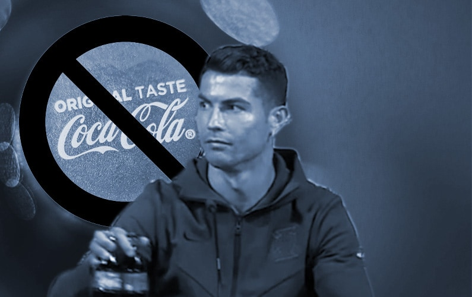

'Discipline Icon' Persona Cracks — Burgers & Coke Galore
The discipline myth: For years Ronaldo was packaged as a 'nutrition textbook' paragon of self-discipline — chicken breast, broccoli, never a grain of sugar, as if he had been immune to junk food since birth. This 'CR7-style discipline' narrative is one of the core selling points of his business empire.
The Coke-shifting show: At a Euro 2020 pre-match press conference, Ronaldo ostentatiously moved the two Coca-Cola bottles off the table and raised a water bottle, shouting 'Água!'. The move was hailed as a health manifesto, and reportedly wiped about $4 billion off Coca-Cola's market cap — peak marketing effect.
The burgers-and-coke reality: But multiple leaks suggest Ronaldo is not sugar-free behind closed doors. In his early United days teammates caught him sneaking burgers; his former nutritionist and several insiders have mentioned his fondness for Coke and sweets. No sugar in public, snacking in private — a hugely ironic contrast.
Commercial irony: A man who privately drinks Coke harvesting the dividend of 'boycotting Coke' as a health persona is football's most ironic marketing. Coca-Cola, an official Euro sponsor, was humiliated on the spot — yet the man himself is a potential consumer of its products.
The domino effect of persona collapse: When the 'discipline myth' clashes with real behaviour, public trust collapses. Ronaldo's muscles and physique are genuinely admirable, but raising him to a 'saint who never touches junk food' is itself a form of over-marketing that sooner or later gets punctured by details.
The idol economy's common failing: This is not Ronaldo's problem alone but the whole sports-idol industry's: moulding players into flawless supermen, then watching a single burger or bottle of Coke bring them down. Building gods and tearing them down are two sides of the same traffic logic.
Verdict: The «discipline icon» is a commercial persona that doesn't hold up against images of Cristiano with junk food and at parties. A preacher of effort who lives like a dissipated billionaire.